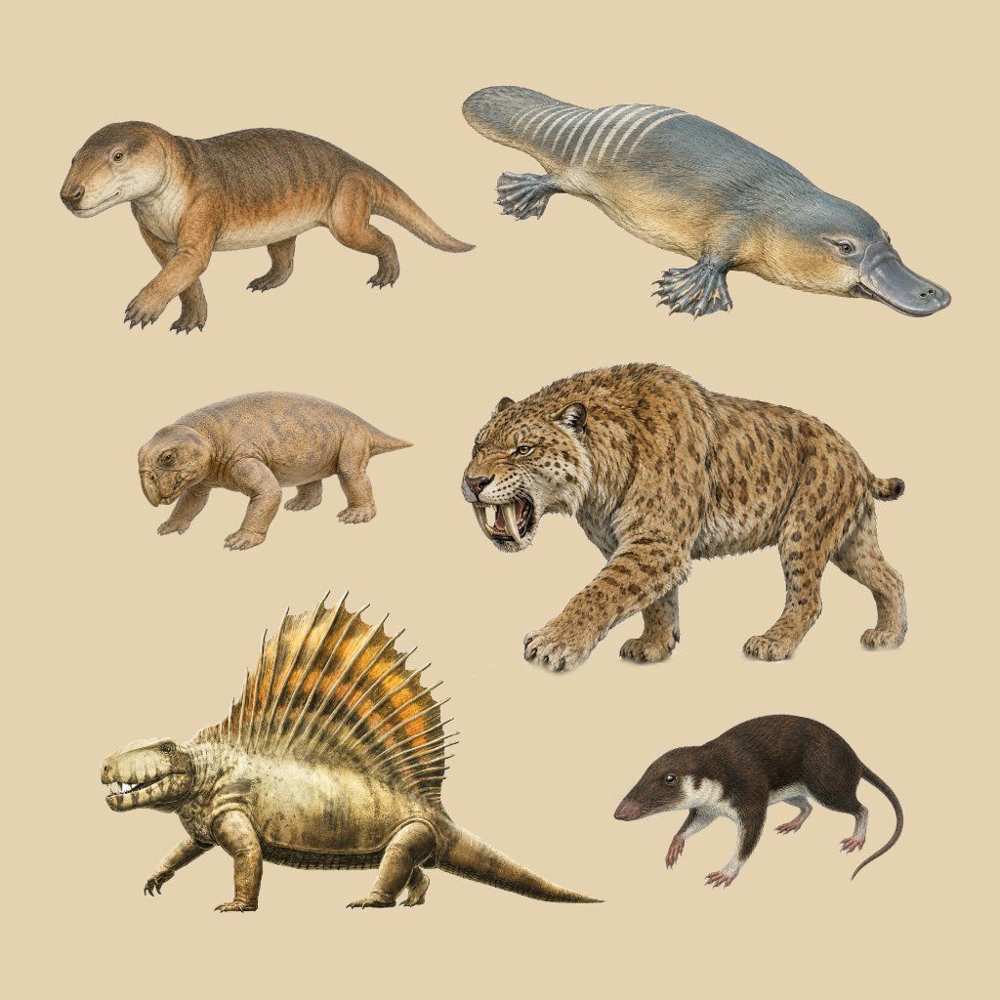

Κλάδος Συναψιδωτά (Synapsida)


Τα Συναψιδωτά εν ο κλάδος πο'σ̌ει μέσα τα θηλαστικά τζ̌αι ούλλους τους συγγενείς τους που εξαφανιστήκαν, πο'ν πιο κοντά στα θηλαστικά παρά στα πουλ̌ιά τζ̌αι στα ερπετά. Η γενιά τους εχώρισεν που τα Σαυρόψιδα πάνω που 300 εκατομμύρια γρόνους πριν, στο Λιθανθρακοφόρον, τζ̌αι τον τζ̌αιρόν του Περμίου, πριν την εποχήν των δεινοσαύρων, ήταν οι «μάστροι» των χερσαίων σπονδυλωτών.
Τ' όνομαν τους φκαίννει που το έναν τζ̌αι μοναδικόν άννοιμαν στο κρανίον πίσω που κάθε κόγχην αμμαθκιού, το κροταφικόν άννοιμαν που διά χώρον τζ̌αι στήριξην στους μύες της μασέλλας. Τα πρώτα συναψιδωτά, ομπρίττερα ελαλούσαν τα «θηλαστικόμορφα ερπετά».
Τα συναψιδωτά εδοκιμαστήκασιν σκληρά στην μιάλην μαζικήν εξαφάνισην στο τέλος του Περμίου, τζ̌' ύστερα η κυριαρχία της ξηράς επέρασεν για πολλύν τζ̌αιρόν στα Σαυρόψιδα. Σήμμερα ο μόνος κλάδος των συναψιδωτών που ζ̌ει ακόμα εν τα Θηλαστικά, τζ̌' ένουσιν εξαιρετικά πολυποίκιλα.